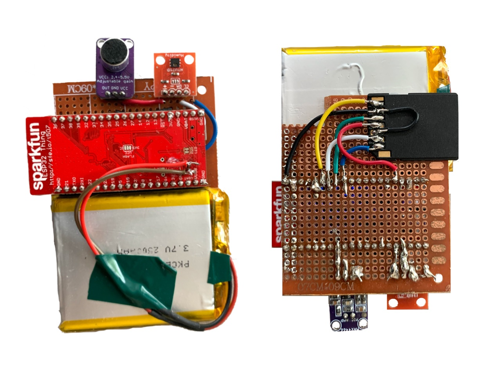
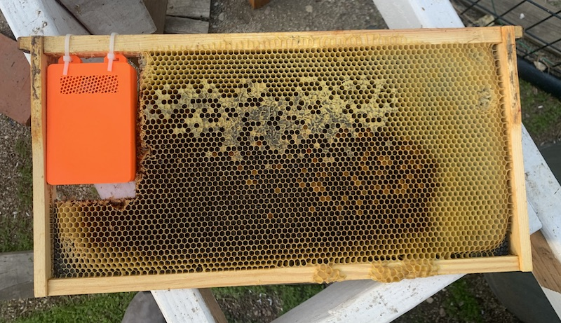
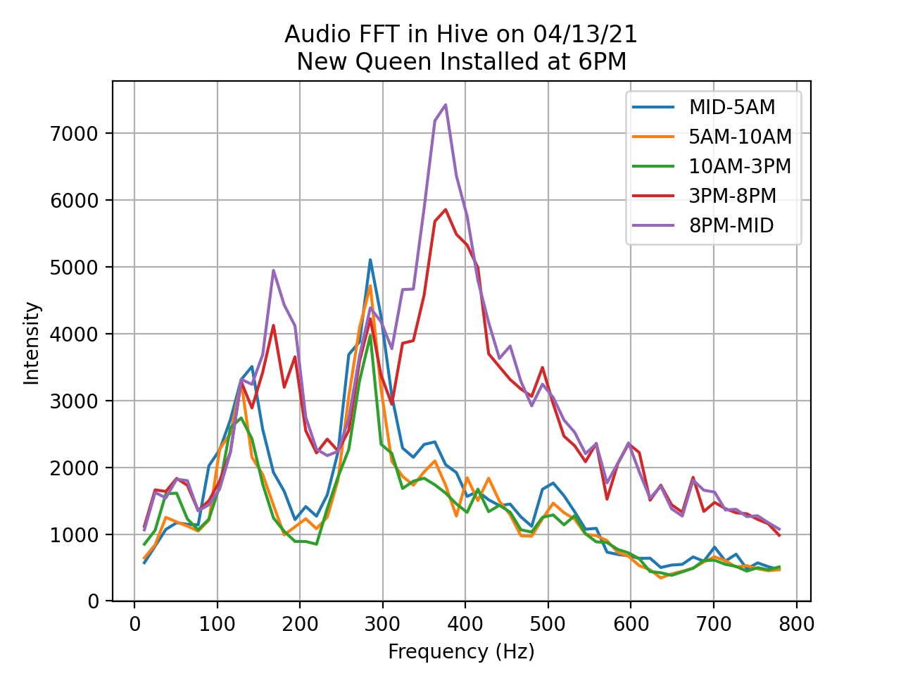
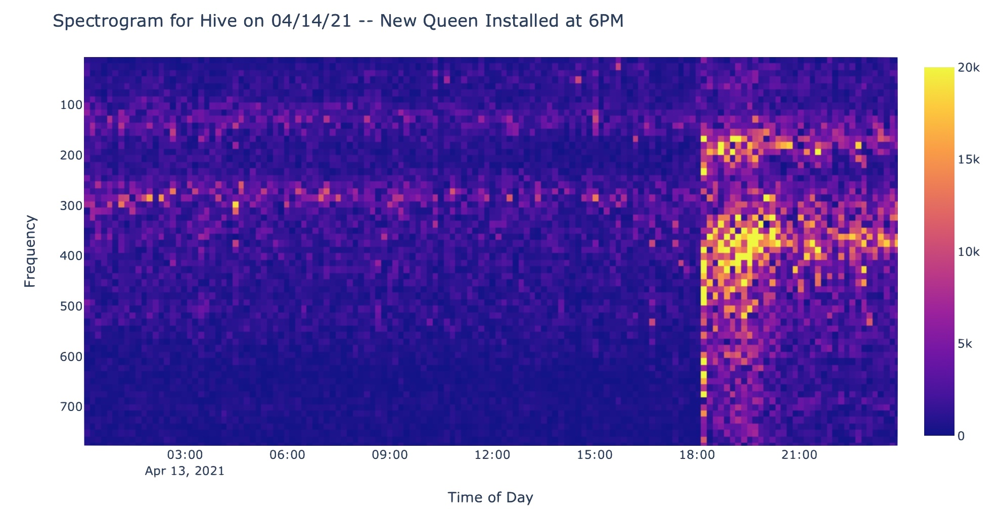

Hive Monitoring Prototype Version 3 -- It's Inside
I’ve learned from my previous prototypes (v1, v2) that hive temperature readings are most informative when they come directly from the brood chamber of the hive. So I made another one that can be placed inside the hive.
⚡️ Electronics
I’m using an ESP32, which is a super inexpensive SoC with all sorts of great features. I soldered it to a protoboard and hooked up an analog microphone and temperature sensor.
The ESP32 is equipped with Wi-Fi and Bluetooth, so in theory I can just aggregate sensor readings in memory and send them off to a server. But I’d like to write the sensor readings to some kind of non-volatile memory for safekeeping. So I soldered on a MicroSD card adapter. Shield your eyes, this thing is kind of an abomination.
 The front and back of the prototype circuit.
The ESP32 is a Sparkfun ESP32 Thing, which has a low-dropout voltage regulator on board. This means I can power it with a LiPo battery.
📦 Enclosure
To prevent the bees from going nuts and tearing up the circuit, I modeled a little enclosure in Fusion 360. It’s just a 3D-printed box that zip-ties to the frame. Because of the thickness of the circuit board, part of the frame had to be cut away. Not ideal, but we’ll address that later.
 The enclosure, in place on the frame.
Firmware
The firmware for this prototype is nearly the same as the firmware for version 2, so I won’t really bore you with it. Basically a C++ program that orchestrates all the sensor readings and syncs. I will say that debugging the firmware was kind of a pain. You don’t realize how many bugs your code has until it’s literally surrounded by thousands of stinging insects.
An interesting technical challenge with this version was audio processing. With my very first prototype, I was recording lossless, hour-long WAV files. But with embedded hardware, there are power and memory limitations that necessitate a different approach. The ESP32 has 4 MB of memory – that’s a lot for an embedded device, but literally three orders of magnitude less than the Raspberry Pi I used in V1.
For this one, I decided to record and average really short audio samples that could fit in memory, and process them on board the ESP32 with an FFT. (An FFT, and more generally a Fourier transform, is a method of converting signals into their component frequencies. For example, if you use an FFT on a choir singing a chord, you’ll be able to tell the pitches the individual members were singing.) The resulting frequency information could then be saved onto the SD card and sent over Wi-Fi to my server.
Data Analysis
With this prototype I wanted to dive deep into processing audio signals from within the hive. So, I installed this monitor in a hive without a queen, and then installed a queen a couple days later. Here are the FFT results from the day the queen was installed.

Note that an FFT was taken every 10 minutes, but they have been averaged together into 5-hour segments to make the chart easier to read. Looking at this graph, you can see that installing a queen in the hive causes a massive change in the the sound the hive makes. The sound gets louder and increases in pitch. A more complete way of viewing this is with a spectrogram:
 In a spectrogram, each column is the FFT of an individual audio sample, and the intensity of frequency bins are encoded as color instead of height. You can clearly see that there was a huge change in the signal at 6PM.
Conclusions
There appears to be some correlation